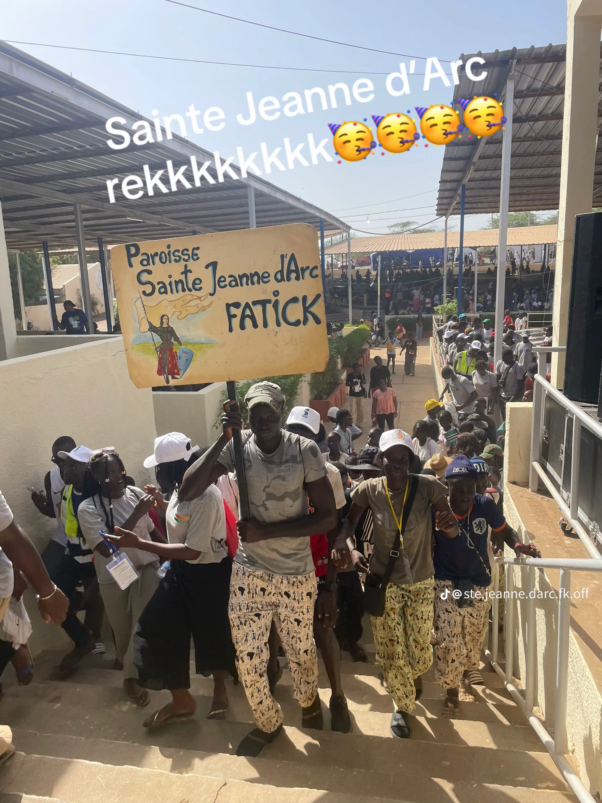
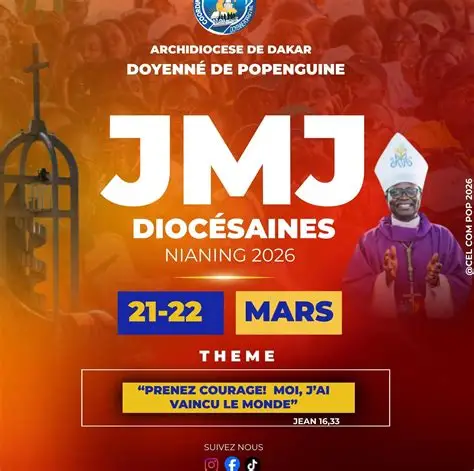
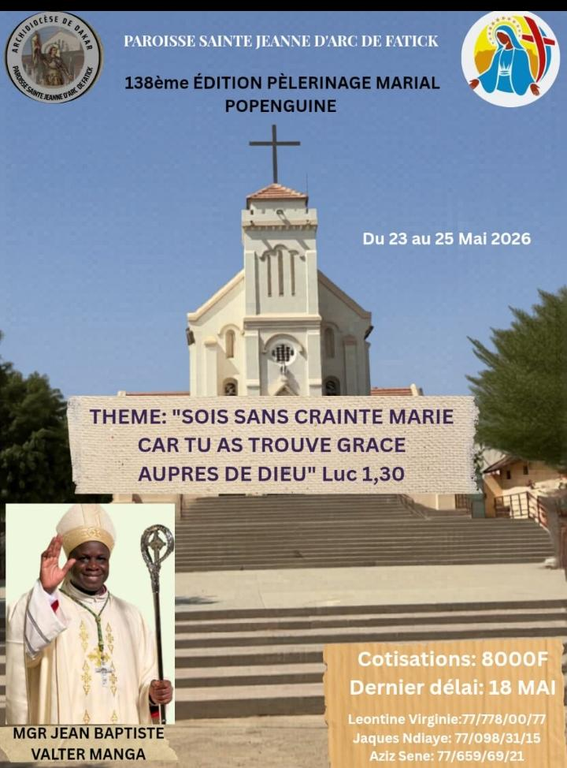
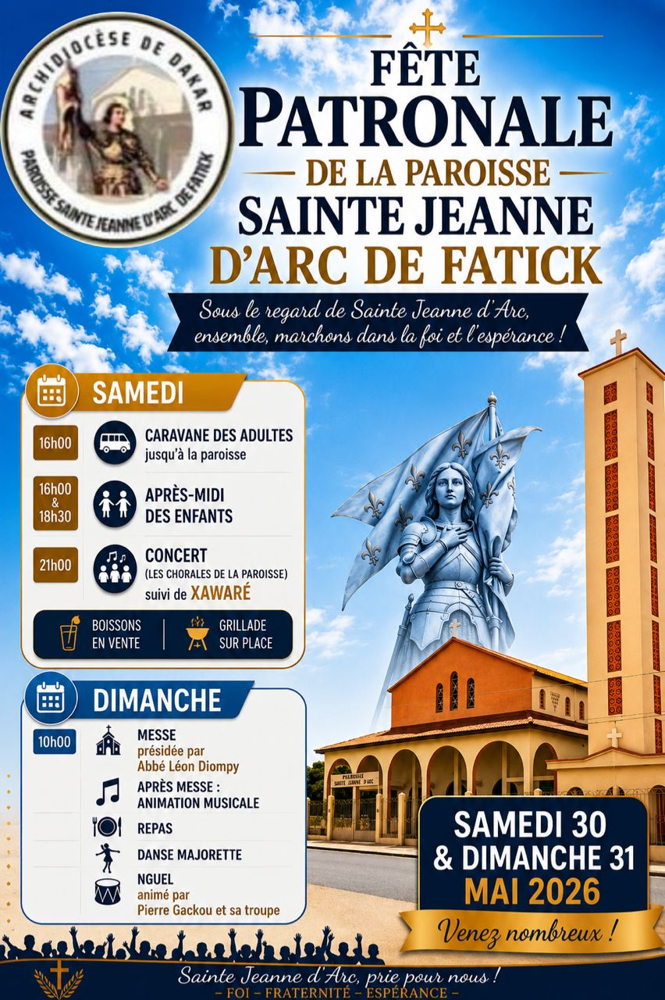

Annonce principale
Ajoutez ici une description claire et engageante. Cette carte peut présenter un événement, une collecte ou un message important.
MESSE à 9h à la Paroisse [obligatoire]
NB: Il y a une messe mensuelle pour les enfants animée par les enfants à la Paroisse
messe:18h30 a la Paroisse
messe:6h30 à la Paroisse
chapelet divine miséricorde:15h,
Adoration-Eucharistique:17h à la Paroisse
messe prédominicale 18h30 à l'institut hospitalier de Dalal xel (sauf les derniers samedis du mois)
La paroisse Sainte Jeanne d'arc de Fatick est une communauté vivante et accueillante, ancrée dans le diocèse de Dakar. Elle rassemble des fidèles de tous âges autour de la foi, de la prière et du service.
Dirigée par l'Abbé Joseph Latyr, notre paroisse est dynamique avec de nombreux groupes de prières et mouvements d'action catholique.
La paroisse a été fondée en ...
Prêtres
Congrégation des soeurs de l'immaculée conception
Les frères de Saint Gabriel
Les frères de l'ordre hospitalier de Saint Jean de DIEU

Ajoutez ici une description claire et engageante. Cette carte peut présenter un événement, une collecte ou un message important.

Le projet du sanctuaire de Mbin Ndiouga a recommencé. Remplacez ce texte par le montant acquis et le reste à financer.

Le projet du centre de formation est toujours en cours. Ajoutez les chiffres et détails pour informer vos visiteurs.

Placez ici un message inspirant ou une actualité supplémentaire. Les images et le texte peuvent être mis à jour facilement.
La plupart des groupes se rencontrent le samedi à 16h.
La petite chorale repéte juste après la messe du dimanche.
Le Renouveau Charismatique se réunit dimanche à 15h et anime la messe du mercredi.
La Grande Chorale répète lundi , mercredi vendredi et samedi à ...h
Adoration : 17h chaque vendredi, suivie du chapelet.
En Église, il n'y a pas d'Étrangers
Pour un meilleur développement et une plus grande autonomie, la paroisse s'engage dans des projets qui participent à la vie sociale et spirituelle de notre communauté.
Des projets ambitieux comme
Soutenez nos projets en nous contactant dès aujourd'hui.
Merci d'avance pour votre générosité et votre engagement au service de la foi et de la communauté.
Restez informés de la vie de la paroisse et de nos actualités.
Pour des informations publiques et des annonces paroissiales, suivez-nous sur nos réseaux officiels.
Contactez nous en remplissant ce formulaire
(N'oubliez pas d'envoyer)
Scannez le code wave ci-dessous pour nous soutenir finacierement.
Numéro Wave : +221 78 966 49 20